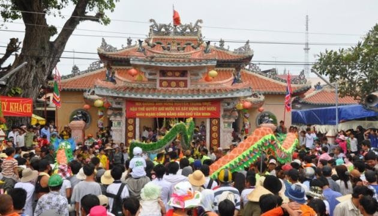
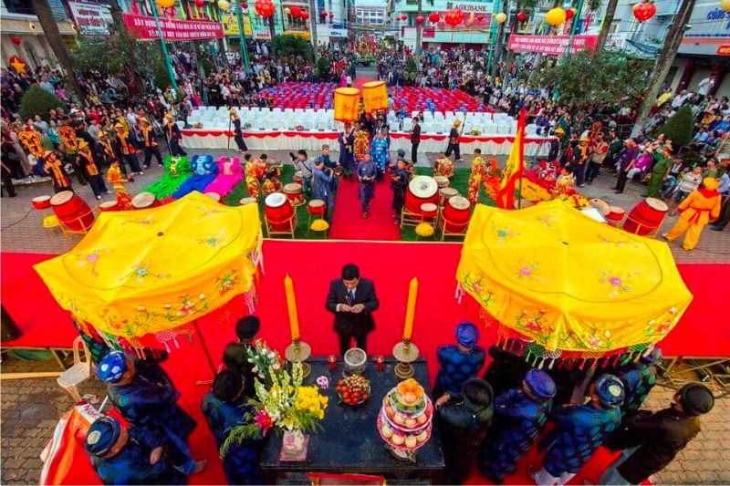

1. Nguyễn Trung Trực – Người Anh Hùng Của Lòng Dân

Nguyễn Trung Trực (1838–1868) là một trong những lãnh tụ kháng Pháp tiêu biểu của Nam Bộ cuối thế kỷ XIX. Xuất thân từ nhân dân, cụ không chỉ cầm gươm đánh giặc mà còn cầm lấy niềm tin của dân chúng làm sức mạnh lớn nhất.
Giữa vùng sông nước mênh mông, nơi ghe thuyền là sinh mệnh, cụ đã biến địa hình quen thuộc của dân thành chiến lũy, thắp lên ngọn lửa kháng chiến không gì dập tắt được.
2. Lửa Thiền – Ngọn Lửa Của Ý Chí Và Niềm Tin
“Lửa thiền” không chỉ là ngọn lửa vật chất, mà là lửa của tâm thế: bình thản trước hiểm nguy, vững vàng trước cái chết, và sáng suốt trong từng quyết định vì dân tộc.
Câu nói bất hủ ấy là minh chứng cho tinh thần bất khuất, cho ngọn lửa không bao giờ tắt trong lòng người dân Việt.
3. Lòng Dân – Ánh Sáng Trên Dòng Sông Tối
Lòng dân chính là nơi ngọn lửa của cụ Nguyễn Trung Trực được nuôi dưỡng. Nhân dân che chở, tiếp tế, và truyền nhau tinh thần kháng chiến như truyền ánh sáng qua từng con nước, từng mái chèo.
Khi cụ hy sinh, ngọn lửa ấy không tắt, mà lan rộng hơn – trở thành biểu tượng cho cả một vùng sông nước Nam Bộ, nơi lòng yêu nước hòa vào nhịp chảy của sông.